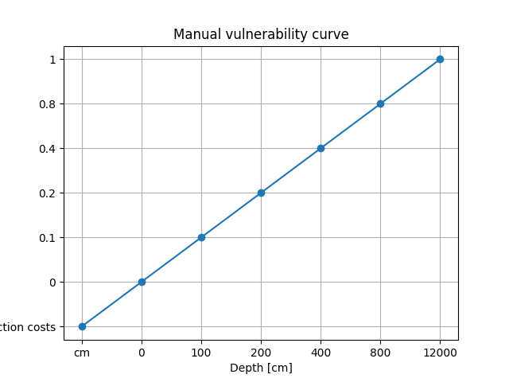

Manual Damage Curves Tutorial#
This is particularly useful when:
You have local historical damage data.
You want to account for specific infrastructure types.
You need to test alternative vulnerability scenarios.
Step 1: Define project paths#
As usual, define your project folder and subdirectories:
[ ]:
from pathlib import Path
root_dir = Path("data", "damage_manual")
static_path = root_dir.joinpath("static")
hazard_path = static_path.joinpath("hazard")
network_path = static_path.joinpath("network")
output_path = root_dir.joinpath("output")
Step 2: Configure the road network and hazard#
polygon.geojson).[ ]:
from ra2ce.network.network_config_data.enums.road_type_enum import RoadTypeEnum
from ra2ce.network.network_config_data.enums.source_enum import SourceEnum
from ra2ce.network.network_config_data.enums.network_type_enum import NetworkTypeEnum
from ra2ce.network.network_config_data.network_config_data import NetworkSection
from ra2ce.ra2ce_handler import Ra2ceHandler
network_section = NetworkSection(
network_type=NetworkTypeEnum.DRIVE,
source=SourceEnum.OSM_DOWNLOAD,
polygon=static_path.joinpath("polygon.geojson"),
save_gpkg=True,
road_types=[
RoadTypeEnum.SECONDARY,
RoadTypeEnum.SECONDARY_LINK,
RoadTypeEnum.PRIMARY,
RoadTypeEnum.PRIMARY_LINK,
RoadTypeEnum.TRUNK,
RoadTypeEnum.MOTORWAY,
RoadTypeEnum.MOTORWAY_LINK,
],
)
Note: The damage analysis requires two attributes from the network file: highway (for the type of roads) and lanes (number of lanes). These attributes are present by default from OSM. Make sure these are also present if you are using your own shapefile.
[ ]:
from ra2ce.network.network_config_data.enums.aggregate_wl_enum import AggregateWlEnum
from ra2ce.network.network_config_data.network_config_data import HazardSection
hazard_section = HazardSection(
hazard_map=[Path(file) for file in hazard_path.glob("*.tif")],
aggregate_wl=AggregateWlEnum.MEAN, # mean water depth used in analysis
hazard_crs="EPSG:4326", # ensure hazard map is in EPSG:4326 projection
)
We combine the network and hazard information into a single configuration object.
[ ]:
from ra2ce.network.network_config_data.network_config_data import NetworkConfigData
network_config_data = NetworkConfigData(
root_path=root_dir,
static_path=static_path,
network=network_section,
hazard=hazard_section
)
network_config_data.network.save_gpkg = True
network_config_data.network.reuse_network_output = True
The network is segment by default into 100m segments. This can be modified using the attribute segmentation_length from CleanupSection.
Step 3: Define the damage analysis#
Here, we specify that RA2CE should perform a damage analysis using manual damage curves (MAN) with the class AnalysisSectionDamages and the attribute damage_curve set to DamageCurveEnum.MAN For manual damage
curves, it is important to also specify the input data in the folder path in the config input_path. This is the location where the custom manual curves will be defined and placed (see next step).
The event type can be set to EVENT if damages are to be calculated for the hazard maps only (example below), or to RETURN_PERIOD if the analysis should estimate risk over a specified return period (see tutorial ).
[ ]:
[ ]:
from ra2ce.analysis.damages.damages import AnalysisSectionDamages
from ra2ce.analysis.analysis_config_data.enums.analysis_damages_enum import AnalysisDamagesEnum
from ra2ce.analysis.analysis_config_data.enums.event_type_enum import EventTypeEnum
from ra2ce.analysis.analysis_config_data.enums.damage_curve_enum import DamageCurveEnum
from ra2ce.analysis.analysis_config_data.analysis_config_data import AnalysisConfigData
damages_analysis = [AnalysisSectionDamages(
name='damages_reference_curve_manual',
analysis=AnalysisDamagesEnum.DAMAGES,
event_type=EventTypeEnum.EVENT,
damage_curve=DamageCurveEnum.MAN, # use manual damage curve
save_csv=True,
save_gpkg=True
)]
analysis_config_data = AnalysisConfigData(
analyses=damages_analysis,
output_path=output_path,
input_path=root_dir.joinpath("input_data")
)
Step 4: Create damage curve files#
In the manual situation, two input files are expected:
A file that specifies the shape of the vulnerability curve:
x-axis = hazard intensity (e.g. water depth in cm)
y-axis = damage fraction (0–1, representing the % of total construction cost)
A file that specifies the construction costs per road type and number of lanes.
Both files should be placed in the folder input_data/damage_functions/all_road_types/.
Vulnerability curve (hazard severity vs. damage fraction)#
The file hazard_severity_damage_fraction.csv looks like:
depth;damage
cm;% of total construction costs
0;0
100;0.1
200;0.2
400;0.4
800;0.8
12000;1
Where:
depth= water depth in cmdamage= damage fraction (0–1, relative to construction cost)
[ ]:
import matplotlib.pyplot as plt
import pandas as pd
input_data_path = root_dir.joinpath("input_data")
vuln_curves = pd.read_csv(input_data_path.joinpath("damage_functions", "all_road_types","hazard_severity_damage_fraction.csv"), delimiter=";")
plt.plot(vuln_curves["depth"], vuln_curves["damage"], marker="o")
plt.xlabel("Depth [cm]")
plt.ylabel("Damage fraction")
plt.title("Manual vulnerability curve")
plt.grid(True)
plt.show()

Maximum construction costs per road type and lanes#
The file max_damage_road_types.csv looks like:
Road_type \ lanes;1;2;3;4;5;6;7;8
unit;euro/m;euro/m;euro/m;euro/m;euro/m;euro/m;euro/m;euro/m
tertiary_link;110;120;130;140;150;130;140;150
tertiary;110;120;130;140;150;130;140;150
trunk;110;120;130;140;150;130;140;150
trunk_link;110;120;130;140;150;130;140;150
secondary_link;11;12;13;14;15;13;14;15
secondary;11;12;13;14;15;13;14;15
primary_link;11;12;13;14;15;13;14;15
primary;11;12;13;14;15;13;14;15
residential;1100;1200;1300;1400;1500;1300;1400;1500
['tertiary', 'residential'];510;520;530;540;550;530;540;550
motorway;1100;1200;1300;1400;1500;1300;1400;1500
motorway_link;510;520;530;540;550;530;540;550
Note
The first file defines the shape of the damage curve (hazard → damage fraction).
The second file defines the maximum construction costs per road type and lane count.
Together, they allow RA2CE to estimate damages in absolute currency units.
Step 5: Run the analysis#
[ ]:
Ra2ceHandler.run_with_config_data(network_config_data, analysis_config_data)
Output#
The results of the manual damage analysis are provided in two GeoPackage (GPKG) files:
damages_reference_curve_manual_link_based.gpkg: damage estimates per network linkdamages_reference_curve_manual_segment.gpkg: damage estimates per 100m segment
Key attributes of interest (in currency):
dam_EV1_al: estimated damage for the first flood map (manual method).dam_EV2_al: estimated damage for the second flood map (manual method).
You can open these files in GIS software (QGIS, ArcGIS) or load them in Python with GeoPandas:
[ ]:
import geopandas as gpd
output_path = root_dir / "output" / 'damages'
link_based = gpd.read_file(output_path / "damages_reference_curve_manual_link_based.gpkg")
segment_based = gpd.read_file(output_path / "damages_reference_curve_manual_segmented.gpkg")
# Inspect the first rows
print(link_based.head())
print(segment_based.head())
You can open the results in GIS software to visualize which road segments are most affected by the hazard.